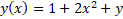
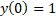
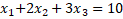
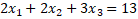
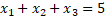
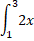

Ujian Akhir Semester Komputasi Numerik¶
Soal¶
1) Gunakan metode Midpoint untuk menyelesaikan Persamaan Deferensial Biasa berikut :


gunakan h=0,1 Tentukan y(0.1) and y(0.2)
2) Hitunglah dengan metode iterasi Jacobi sampai iterasi ke 4 untuk penyelesaian sistem persamaan liner berikut



3) Hitunglah  dengan Metode Trapesium Rekursif
Jawaban¶
1) Penyelesaian Persamaan Defrensial Biasa dari
dengan h=0,1 dan initial x0=0, initial y0=1=, dalam bentuk program dengan metode midpoint
from numpy import arange
def midpoint_method(f, x0, y0, h):
print('\nMidpoint Method')
y = y0
for i in arange(0, 0.5, 0.1):
y = y0 + h * i * f(x0, y)
print('y', round(i,1), '=', round(y, 4))
def f(x, y):
return 1 + 2*(x**2) + y
y0 = 1
x0 = 0
h = 0.1
midpoint_method(f, x0, y0, h)
Hasil running
Midpoint Method
y 0.0 = 1.0
y 0.1 = 1.02
y 0.2 = 1.0404
y 0.3 = 1.0612
y 0.4 = 1.0824
2) Berikut merupakan program dengan metode iterasi Jacobi untuk penyelesian sistem persamaan linear dari
import math
import copy
from numpy import linalg
A = [[1, 2, 3], [2, 3, 3], [1, 1, 1]]
B = [10, 13, 5]
X = [0] * len(A)
X_temp = copy.copy(X)
error = 0.1
max_iterasi = 4
print('Matrix A', A)
print('Matrix B', B, '\n')
e = 1
iterasi = 0
while math.sqrt(e) >= error and iterasi < max_iterasi:
if linalg.det(A) != 0:
for i in range(len(X)):
i_sum = 0
for j in range(len(X)):
if j!=i:
i_sum += A[i][j] * X_temp[j]
X[i] = round((B[i] - i_sum) / A[i][i], 4)
print('k-'+str(iterasi+1), 'X =', X)
e = 0
for i in range(len(X)):
e += (X[i] - X_temp[i]) ** 2
X_temp = copy.copy(X)
iterasi+=1
else:
print('tidak ada peneyelesaian untuk persamaan tersebut!')
for i in range(len(X)):
print('X'+str(i+1),':', X[i])
print('\naproksimsai error =', math.sqrt(e))
Hasil running
Matrix A [[1, 2, 3], [2, 3, 3], [1, 1, 1]]
Matrix B [10, 13, 5]
k-1 X = [10.0, 4.3333, 5.0]
k-2 X = [-13.6666, -7.3333, -9.3333]
k-3 X = [52.6665, 22.7777, 25.9999]
k-4 X = [-113.5551, -56.7776, -70.4442]
X1 : -113.5551
X2 : -56.7776
X3 : -70.4442
aproksimsai error = 207.9906980839768
3) Berikut program dengan menggunakan metode Trapesium Rekursif untuk menghitung nilai integral dari dengan 4 kali kali iterasi
def trapezoid_rekursif(f, a, b, n):
trapezoid = 0
print(' R', '\t', 'Trapezoid')
for i in range(0,n+1):
k = 2**i
h = (b-a)/k
xi = a
jum = 0
for j in range(1,k):
xi += h
jum += f(xi)
old_trapezoid = trapezoid
trapezoid = (h * (f(a)+(2*jum)+f(b)) ) / 2
print('('+str(i)+',0)\t', round(trapezoid, 4))
print('\naproksimasi error :', old_trapezoid - trapezoid)
def f(x):
return 2*x
print("f(x) = 2x\n")
a = 1
b = 3
n = 3
trapezoid_rekursif(f, a, b, n)
Hasil running
f(x) = 2x
R Trapezoid
(0,0) 8.0
(1,0) 8.0
(2,0) 8.0
(3,0) 8.0
aproksimasi error : 0.0